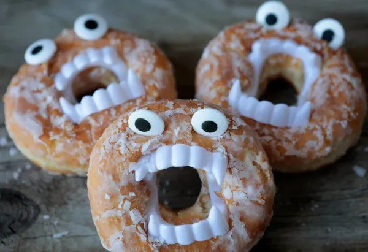

<!DOCTYPE html>
<html lang="en">
<head>
    <meta charset="UTF-8">
    <title>Spooky Donuts/title>
</head>
<body>
    <h1>Spooky Donuts</h1>

    

    <h2>Description</h2>

    <p>
        Here's how to make the spookiest of Donuts.
    </p>

    <h3><strong>Ingredients</strong></h3>
    <ul>
        <li>A donut from dunkin or your favorite donut dispensary</li>
        <li>Eyeball candy</li>
        <li>Edible dracula fangs</li>
    </ul>

    <h3><strong>Steps</strong></h3>
    <ol>
        <li>
            Grab the donut.
        </li>

        <li>
            Put eyes on the donut.
        </li>

        <li>
            Put the fangs on the donut.
        </li>

        <li>
            The donut is now very spooky, enjoy.
        </li>
    </ol>

</body>
</html>